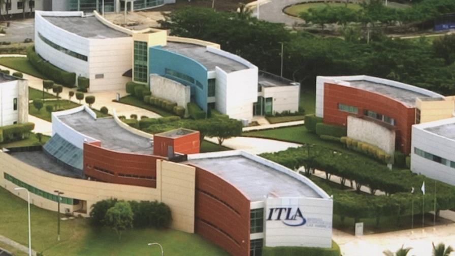

Conoce la evolución del ITLA y su impacto en la educación tecnológica del país.

El Instituto Tecnológico de Las Américas (ITLA) fue creado con el objetivo de impulsar el desarrollo tecnológico en la República Dominicana.
Desde sus inicios, ha sido una institución clave en la formación de talento en áreas digitales, innovación y tecnología.
Fundación del ITLA como institución educativa tecnológica.
Expansión de programas académicos en áreas digitales.
Reconocimiento como institución líder en educación tecnológica.
Innovación continua con nuevas plataformas digitales y programas.
El ITLA ha contribuido significativamente al desarrollo del talento tecnológico en la República Dominicana, formando profesionales altamente capacitados.
Egresados
Años de trayectoria
Demanda laboral